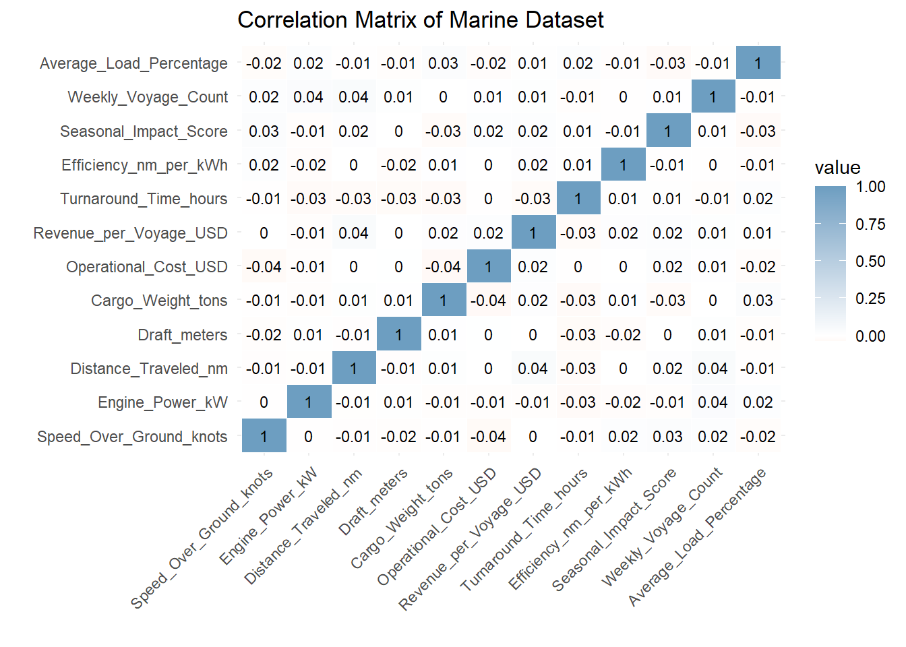
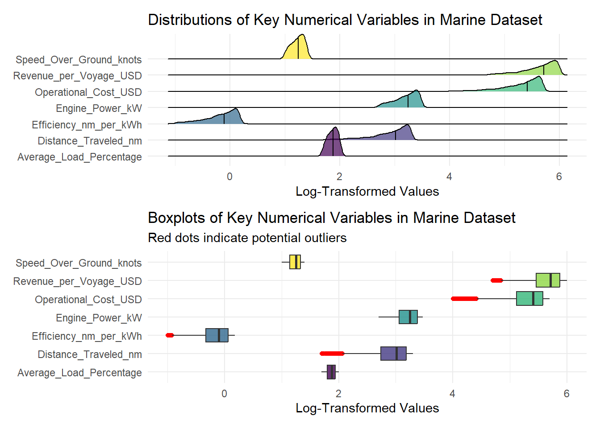
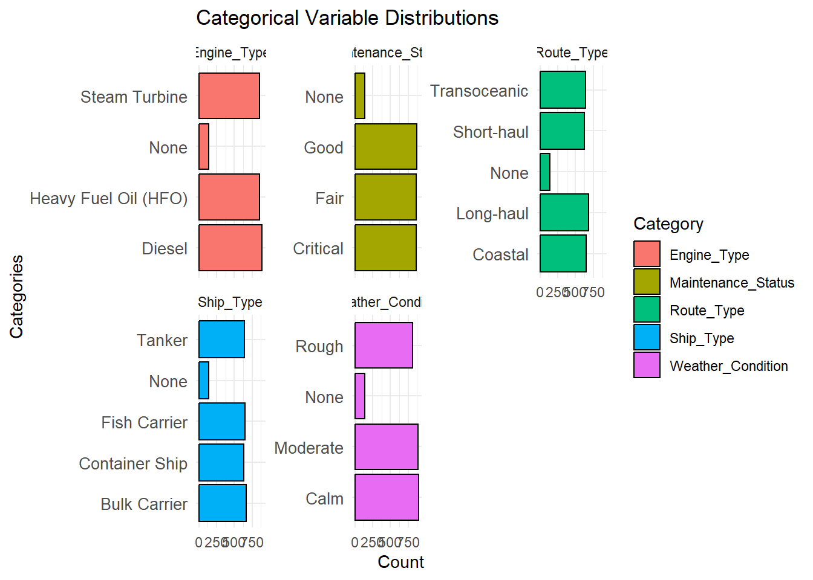
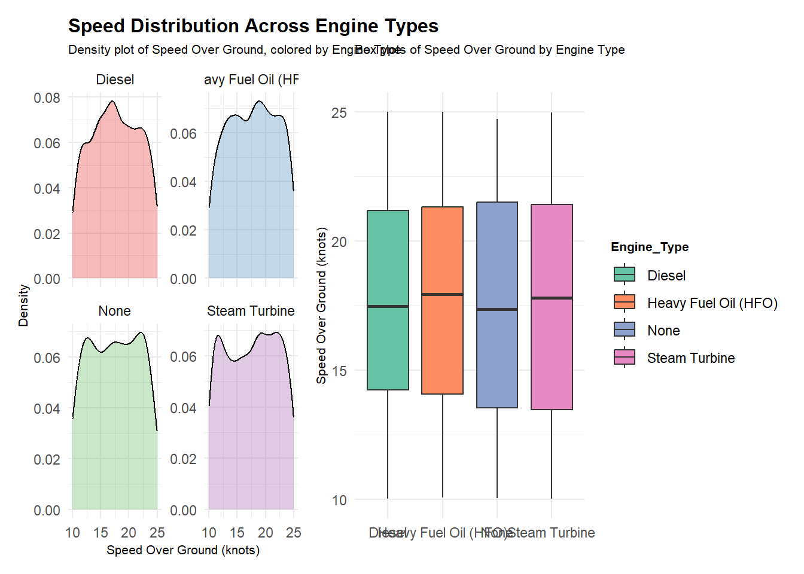
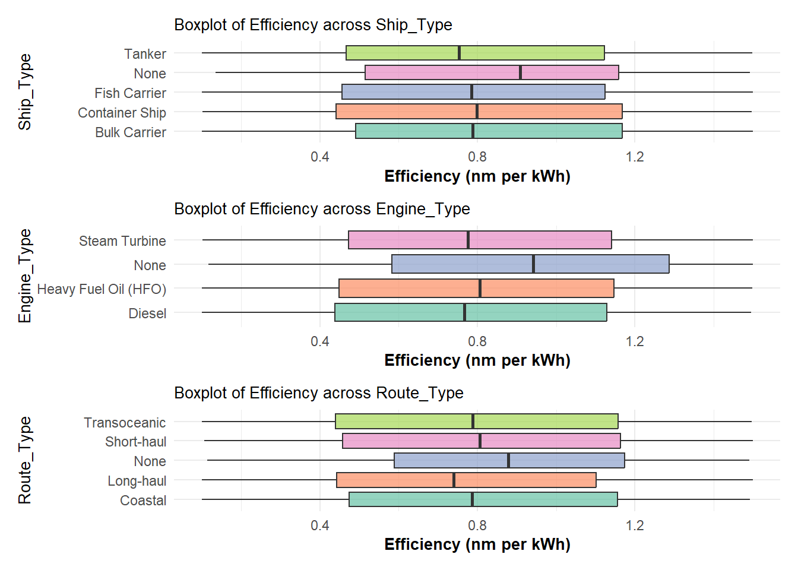
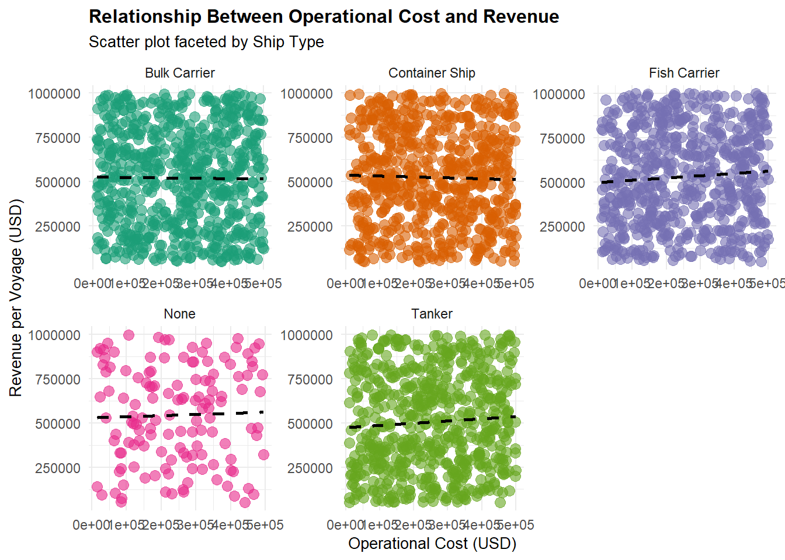
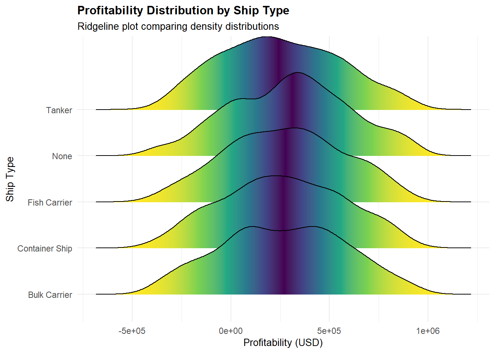
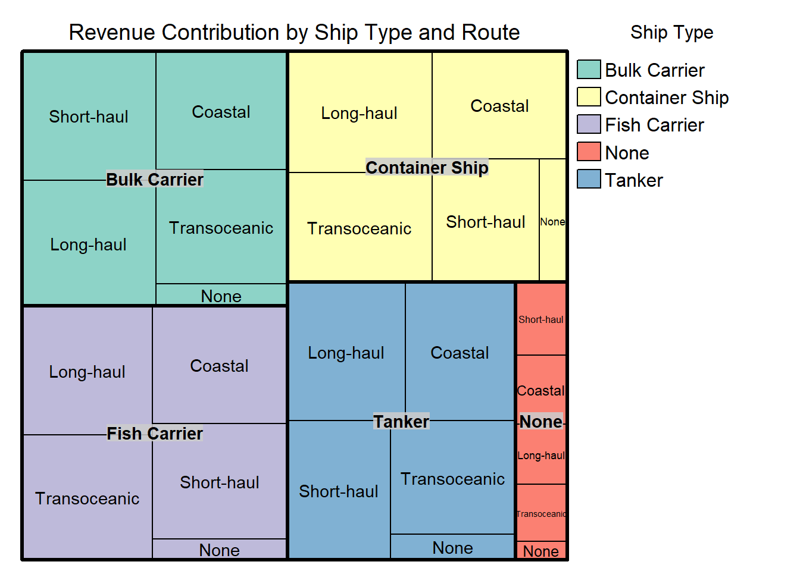

pacman::p_load(tidyverse, haven,
ggrepel, ggthemes,
ggridges, ggdist,
patchwork, scales)Take_Home Exercise 1
Ship Performance in the Gulf of Guinea
1. Overview
Setting the scene
The maritime sector is one of the most critical components of global trade, contributing significantly to economic growth and sustainability. Understanding ship performance, fuel efficiency, and operational cost factors are essential for improving decision-making and minimizing environmental impact.
An international media company that publishes weekly content on digital platforms is planning to release articles on “Ship Performance in the Gulf of Guinea”.
As the role of the graphical editor of the media company, I am going to prepare data visualization for the article.
Objective
In this exercise, Exploratory Data Analysis (EDA) methods and ggplot functions are used to explore:
the distribution of Ship performance in efficiency, operational cost, speed, fuel consumption, and revenue generation.
the relationship between these performances with draft, cargo weight, weather, engine type, ship type, seasonal impact and etc.
2. Getting Started
Loading packages
The following R packages using the pacman::p_load() function are loaded.
tidyverse: Core collection of R packages designed for data science
haven: To read in data formats such as SAS and SPSS
ggrepel: to provides geoms for ggplot2 to repel overlapping text labels
ggthemes: to use additional themes for ggplot2
patchwork: to prepare composite figure created using ggplot2
ggridges: to plot ridgeline plots
ggdist: for visualizations of distributions and uncertainty
scales: provides the internal scaling infrastructure used by ggplot2
3. Data Wrangling
Importing data
The dataset used in the exercise is in CSV format, retrieved from Kaggle.comhttps://www.kaggle.com/datasets/jeleeladekunlefijabi/ship-performance-clustering-dataset
The code chunk below import the dataset using read_csv() function of the haven package.
library(readr)
marine <- read_csv("data/Ship_Performance_Dataset.csv")Glimpse of data
Using the glimpse() function, we see that the dataset consists of 2,736 rows and 18 columns. It also shows the column names, column type, and the first few entries of each column.
glimpse(marine)Rows: 2,736
Columns: 18
$ Date <date> 2023-06-04, 2023-06-11, 2023-06-18, 2023-06-2…
$ Ship_Type <chr> "Container Ship", "Fish Carrier", "Container S…
$ Route_Type <chr> "None", "Short-haul", "Long-haul", "Transocean…
$ Engine_Type <chr> "Heavy Fuel Oil (HFO)", "Steam Turbine", "Dies…
$ Maintenance_Status <chr> "Critical", "Good", "Fair", "Fair", "Fair", "F…
$ Speed_Over_Ground_knots <dbl> 12.59756, 10.38758, 20.74975, 21.05510, 13.742…
$ Engine_Power_kW <dbl> 2062.9840, 1796.0574, 1648.5567, 915.2618, 108…
$ Distance_Traveled_nm <dbl> 1030.9436, 1060.4864, 658.8741, 1126.8225, 144…
$ Draft_meters <dbl> 14.132284, 14.653083, 7.199261, 11.789063, 9.7…
$ Weather_Condition <chr> "Moderate", "Rough", "Moderate", "Moderate", "…
$ Cargo_Weight_tons <dbl> 1959.0179, 162.3947, 178.0409, 1737.3853, 260.…
$ Operational_Cost_USD <dbl> 483832.35, 483388.00, 448543.40, 261349.61, 28…
$ Revenue_per_Voyage_USD <dbl> 292183.27, 883765.79, 394018.75, 87551.38, 676…
$ Turnaround_Time_hours <dbl> 25.86708, 63.24820, 49.41815, 22.40911, 64.158…
$ Efficiency_nm_per_kWh <dbl> 1.4551789, 0.2903614, 0.4995945, 0.7029057, 1.…
$ Seasonal_Impact_Score <dbl> 1.4156533, 0.8856478, 1.4058132, 1.3707043, 0.…
$ Weekly_Voyage_Count <dbl> 1, 6, 9, 1, 8, 7, 3, 6, 8, 2, 9, 4, 3, 7, 7, 3…
$ Average_Load_Percentage <dbl> 93.76925, 93.89537, 96.21824, 66.19370, 80.008…Checking for Duplicates
Using the duplicated function, we see that there are no duplicate entries in the data.
marine[duplicated(marine),]# A tibble: 0 × 18
# ℹ 18 variables: Date <date>, Ship_Type <chr>, Route_Type <chr>,
# Engine_Type <chr>, Maintenance_Status <chr>, Speed_Over_Ground_knots <dbl>,
# Engine_Power_kW <dbl>, Distance_Traveled_nm <dbl>, Draft_meters <dbl>,
# Weather_Condition <chr>, Cargo_Weight_tons <dbl>,
# Operational_Cost_USD <dbl>, Revenue_per_Voyage_USD <dbl>,
# Turnaround_Time_hours <dbl>, Efficiency_nm_per_kWh <dbl>,
# Seasonal_Impact_Score <dbl>, Weekly_Voyage_Count <dbl>, …Checking for Missing Values
Numerical Variables are selected to identify
The colSums() function in the base package is used to check for missing values in marine. There are no missing values in the tibble data frame.
colSums(is.na(marine)) Date Ship_Type Route_Type
0 0 0
Engine_Type Maintenance_Status Speed_Over_Ground_knots
0 0 0
Engine_Power_kW Distance_Traveled_nm Draft_meters
0 0 0
Weather_Condition Cargo_Weight_tons Operational_Cost_USD
0 0 0
Revenue_per_Voyage_USD Turnaround_Time_hours Efficiency_nm_per_kWh
0 0 0
Seasonal_Impact_Score Weekly_Voyage_Count Average_Load_Percentage
0 0 0 Correlation Analysis
Numerical variables are selected to perform correlation analysis. All the variables looks fine.
library(ggplot2)
library(dplyr)
library(reshape2)
# Select only numeric variables
numeric_vars <- marine %>% select(where(is.numeric))
# Compute correlation matrix
cor_matrix <- cor(numeric_vars, use = "complete.obs")
# Melt correlation matrix for better visualization
cor_data <- melt(cor_matrix)
# Improved heatmap-style correlation matrix
ggplot(data = cor_data, aes(x=Var1, y=Var2, fill=value)) +
geom_tile(color = "white") +
geom_text(aes(label = round(value, 2)), color = "black", size = 3) +
scale_fill_gradient2(low = "#E46726", mid = "white", high = "#6D9EC1", midpoint = 0) +
labs(title = "Correlation Matrix of Marine Dataset",
x = "", y = "") +
theme_minimal() +
theme(axis.text.x = element_text(angle = 45, vjust = 1, hjust = 1))
Filtering for Relevant Variables
Of 18 columns, the following 12 are preliminary selected to answer the analytical questions. The Code Book from Kaggle provides detailed description of the variables and I have referred to it..
| Variable Name | Description | Type of Variable |
|---|---|---|
| Ship_Type | Type of ship (Fish Carrier, Container Ship, Tanker, Bulk Carrier) |
Categorical |
| Route_Type | Shipping route type (Coastal, Short-haul, Long-haul, Transoceanic) |
Categorical |
| Engine_Type | Type of engine (None, Diesel, Heavy Fuel Oil (HFO), Steam Turbine) |
Categorical |
| Weather_Condition | Maintenance condition of the ship (None, Calm, Moderate ,Rough) |
Categorical |
| Maintenance_Status | Prevailing weather conditions during voyages (None, Good, Fair, Critical) |
Categorical |
| Speed_Over_Ground_knots | Average speed of the ship over water | Numerical |
| Engine_Power_kW | Engine power output | Numerical |
| Distance_Traveled_nm | Total distance traveled by the ship | Numerical |
| Operational_Cost_USD | Total operational cost per voyage | Numerical |
| Revenue_per_Voyage_USD | Revenue generated per voyage | Numerical |
| Efficiency_nm_per_kWh | Energy efficiency calculated in nautical miles per kilowatt-hour | Numerical |
| Average_Load_Percentage | Average load of the ship calculated in percentage | Numerical |
marine_filtered <- marine %>%
select(Ship_Type, Route_Type,Engine_Type,Weather_Condition,Maintenance_Status,Speed_Over_Ground_knots,
Engine_Power_kW, Distance_Traveled_nm,Operational_Cost_USD,Revenue_per_Voyage_USD,Efficiency_nm_per_kWh,
Average_Load_Percentage)
glimpse(marine_filtered)Rows: 2,736
Columns: 12
$ Ship_Type <chr> "Container Ship", "Fish Carrier", "Container S…
$ Route_Type <chr> "None", "Short-haul", "Long-haul", "Transocean…
$ Engine_Type <chr> "Heavy Fuel Oil (HFO)", "Steam Turbine", "Dies…
$ Weather_Condition <chr> "Moderate", "Rough", "Moderate", "Moderate", "…
$ Maintenance_Status <chr> "Critical", "Good", "Fair", "Fair", "Fair", "F…
$ Speed_Over_Ground_knots <dbl> 12.59756, 10.38758, 20.74975, 21.05510, 13.742…
$ Engine_Power_kW <dbl> 2062.9840, 1796.0574, 1648.5567, 915.2618, 108…
$ Distance_Traveled_nm <dbl> 1030.9436, 1060.4864, 658.8741, 1126.8225, 144…
$ Operational_Cost_USD <dbl> 483832.35, 483388.00, 448543.40, 261349.61, 28…
$ Revenue_per_Voyage_USD <dbl> 292183.27, 883765.79, 394018.75, 87551.38, 676…
$ Efficiency_nm_per_kWh <dbl> 1.4551789, 0.2903614, 0.4995945, 0.7029057, 1.…
$ Average_Load_Percentage <dbl> 93.76925, 93.89537, 96.21824, 66.19370, 80.008…4. Exploratory Data Analysis
EDA 1: Distribution of Numerical Variables
# Load necessary libraries
library(ggplot2)
library(ggridges)
library(dplyr)
library(tidyr)
library(viridis)
library(patchwork)
# Convert data to long format for visualization
marine_long <- marine %>%
pivot_longer(
cols = c("Speed_Over_Ground_knots", "Engine_Power_kW", "Distance_Traveled_nm",
"Operational_Cost_USD", "Revenue_per_Voyage_USD", "Efficiency_nm_per_kWh",
"Average_Load_Percentage"),
names_to = "Variable",
values_to = "Value"
)
# Apply log transformation for better scaling
marine_long <- marine_long %>%
mutate(Value = ifelse(Value > 0, log10(Value), NA)) # Log transformation
# Improved Ridge Plot (Better visualization of distributions)
marine_ridgeplot <- ggplot(marine_long, aes(x = Value, y = Variable, fill = Variable)) +
geom_density_ridges(alpha = 0.7, quantile_lines = TRUE,
quantile_fun = function(y, ...) quantile(y, probs = 0.5, na.rm = TRUE)) +
scale_x_continuous(name = "Log-Transformed Values", labels = scales::comma) +
scale_fill_viridis_d() +
labs(title = "Distributions of Key Numerical Variables in Marine Dataset") +
theme_minimal() +
theme(legend.position = "none", axis.title.y = element_blank())
# Improved Boxplot (Detecting outliers with better scaling)
marine_boxplot <- ggplot(marine_long, aes(x = Variable, y = Value, fill = Variable)) +
geom_boxplot(outlier.colour = "red", outlier.shape = 16, alpha = 0.8) +
coord_flip() +
scale_fill_viridis_d() +
labs(title = "Boxplots of Key Numerical Variables in Marine Dataset",
subtitle = "Red dots indicate potential outliers",
x = "", y = "Log-Transformed Values") +
theme_minimal() +
theme(legend.position = "none", axis.title.y = element_blank())
# Combine Ridge Plot and Boxplot
marine_ridgeplot / marine_boxplot
Insights
The data has been log-transformed, which suggests the original values had a skewed distribution (likely right-skewed).
Efficiency_nm_per_kWh” and “Distance_Traveled_nm” have multiple red dots, indicating several outliers.
“Revenue_per_Voyage_USD” and “Operational_Cost_USD” also have notable outliers, possibly reflecting extreme voyages or cost fluctuations.
EDA 2: Exploring the distribution of categorical variables
# Convert categorical variables into long format
marine_long <- marine %>%
select(Ship_Type, Route_Type, Engine_Type, Weather_Condition, Maintenance_Status) %>%
pivot_longer(cols = everything(), names_to = "Category", values_to = "Value")
# Create horizontal bar charts with different colors for categories
ggplot(marine_long, aes(y = Value, fill = Category)) +
geom_bar(color = "black") + # Black outline for bars
facet_wrap(~Category, scales = "free_y") + # Facet by category
labs(title = "Categorical Variable Distributions", x = "Count", y = "Categories") +
theme_minimal() +
theme(axis.text.y = element_text(size = 10)) 
Insights
The most common engine types are Heavy Fuel Oil (HFO) and Diesel, suggesting that most ships operate on these fuel sources.
Most ships are in Good or Fair maintenance condition, with fewer classified as Critical.
Long-haul and Coastal routes also have a significant presence.
Bulk Carrier, Container Ship, and Fish Carrier are the most common ship types in the dataset.
Since most ships operate in calm or moderate weather, it could suggest that voyages are planned around favorable conditions.
EDA 3: Exploring Relationship between Speed and Engine Power
# Load necessary libraries
library(ggplot2)
library(dplyr)
library(patchwork)
# Create the faceted density plot (Speed Over Ground Distribution by Engine Power)
speed_densityplot <- ggplot(data = marine, aes(x = Speed_Over_Ground_knots, fill = Engine_Type)) +
geom_density(alpha = 0.3) +
facet_wrap(~ Engine_Type, scales = "free_y", nrow = 2) +
labs(x = "Speed Over Ground (knots)", y = "Density",
title = "Speed Distribution Across Engine Types",
subtitle = "Density plot of Speed Over Ground, colored by Engine Type") +
theme_minimal() +
scale_fill_brewer(palette = "Set1") +
theme(legend.position = "none",
plot.title = element_text(face = "bold", size = 12),
plot.subtitle = element_text(size = 8),
axis.title.y = element_text(size = 8),
axis.title.x = element_text(size = 8))
# Create the boxplot for Speed Over Ground by Engine Type
speed_boxplot <- ggplot(marine, aes(x = Engine_Type, y = Speed_Over_Ground_knots, fill = Engine_Type)) +
geom_boxplot(position = position_dodge(0.8)) +
theme_minimal() +
labs(y = "Speed Over Ground (knots)", subtitle = "Box plots of Speed Over Ground by Engine Type") +
theme(axis.title.x = element_blank(),
legend.title = element_text(face = "bold", size = 8),
plot.subtitle = element_text(size = 8),
axis.title.y = element_text(size = 8)) +
scale_fill_brewer(palette = "Set2")
# Combine the plots
speed_densityplot + speed_boxplot
Insights
- Diesel and Heavy Fuel Oil (HFO) engines have unimodal distributions, meaning ships with these engines tend to operate at a consistent range of speeds.
- Steam Turbine: The bimodal distribution (two peaks) suggests two common speed ranges. This could indicate different operating modes, such as low-speed cruising and high-speed transit.
- The median speed is similar across all engine types, around 17-18 knots. This suggests that regardless of engine type, ships tend to operate within a consistent speed range.
EDA 4: Exploring Relationship between Efficiency Across Ship Type, Engine Type and Route Type
library(ggplot2)
library(dplyr)
library(patchwork)
# Function to create boxplots
plot_efficiency_boxplot <- function(var) {
ggplot(marine, aes(x = .data[[var]], y = Efficiency_nm_per_kWh, fill = .data[[var]])) +
geom_boxplot(outlier.colour = "red", outlier.shape = 16, alpha = 0.7) +
theme_minimal() +
labs(y = "Efficiency (nm per kWh)", x = var,
subtitle = paste("Boxplot of Efficiency across", var)) +
scale_fill_brewer(palette = "Set2") +
theme(axis.title.x = element_text(face = "bold", size = 10),
legend.position = "none",
plot.subtitle = element_text(size = 10),
axis.title.y = element_text(size = 10)) +
coord_flip()
}
# Generate boxplots
boxplot_ship <- plot_efficiency_boxplot("Ship_Type")
boxplot_engine <- plot_efficiency_boxplot("Engine_Type")
boxplot_route <- plot_efficiency_boxplot("Route_Type")
# Display all boxplots together
boxplot_ship / boxplot_engine / boxplot_route
library(ggplot2)
library(dplyr)
library(patchwork)
# Function to create boxplots
plot_efficiency_boxplot <- function(var) {
ggplot(marine, aes(x = .data[[var]], y = Efficiency_nm_per_kWh, fill = .data[[var]])) +
geom_boxplot(outlier.colour = "red", outlier.shape = 16, alpha = 0.7) +
theme_minimal() +
labs(y = "Efficiency (nm per kWh)", x = var,
subtitle = paste("Boxplot of Efficiency across", var)) +
scale_fill_brewer(palette = "Set2") +
theme(axis.title.x = element_text(face = "bold", size = 10),
legend.position = "none",
plot.subtitle = element_text(size = 10),
axis.title.y = element_text(size = 10)) +
coord_flip()
}
# Generate boxplots
boxplot_ship <- plot_efficiency_boxplot("Ship_Type")
boxplot_engine <- plot_efficiency_boxplot("Engine_Type")
boxplot_route <- plot_efficiency_boxplot("Route_Type")
# Display all boxplots together
boxplot_ship / boxplot_engine / boxplot_route
EDA 5: Heatmap of Efficiency for different Ship_Type, Engine_Type and Route_Type
#| fig-width: 12
#| fig-height: 10
# Convert Efficiency into categories for heatmap visualization
marine <- marine %>%
mutate(
Efficiency_Category = factor(case_when(
Efficiency_nm_per_kWh >= quantile(Efficiency_nm_per_kWh, 0.75, na.rm = TRUE) ~ "High",
Efficiency_nm_per_kWh >= quantile(Efficiency_nm_per_kWh, 0.25, na.rm = TRUE) ~ "Moderate",
TRUE ~ "Low"
), levels = c("Low", "Moderate", "High"))
)
# Calculate proportions across efficiency levels by category
efficiency_proportions <- marine %>%
gather(key = "Efficiency_Level", value = "Value", Efficiency_Category) %>%
count(Ship_Type, Engine_Type, Route_Type, Efficiency_Level, Value) %>%
group_by(Ship_Type, Engine_Type, Route_Type, Efficiency_Level) %>%
mutate(Proportion = n / sum(n),
Value = factor(Value, levels = c("Low", "Moderate", "High"))) %>%
ungroup()
# Function to create heatmaps
plot_efficiency_heatmap <- function(var) {
ggplot(efficiency_proportions, aes(x = .data[[var]], y = Value, fill = Proportion)) +
geom_tile() +
scale_fill_gradient(low = "white", high = "steelblue") +
facet_wrap(~ Efficiency_Level, scales = "free_x") +
labs(x = var,
y = "Efficiency Level",
fill = "Proportion",
subtitle = paste("Heatmap of Efficiency in", var)) +
theme_minimal() +
theme(panel.background = element_rect(fill = "white", colour = NA),
axis.text.x = element_text(size = 8, angle = 45),
axis.text.y = element_text(size = 8),
axis.title.x = element_text(size = 8),
axis.title.y = element_text(size = 8),
legend.text = element_text(size = 8),
legend.title = element_text(size = 8),
plot.subtitle = element_text(size = 8))
}
# Generate heatmaps
efficiency_heatmap_ship <- plot_efficiency_heatmap("Ship_Type")
efficiency_heatmap_engine <- plot_efficiency_heatmap("Engine_Type")
efficiency_heatmap_route <- plot_efficiency_heatmap("Route_Type")
# Display all heatmaps together
efficiency_heatmap_ship + efficiency_heatmap_engine + efficiency_heatmap_route
Insights
Moderate efficiency dominates across all categories, suggesting that most ships operate within standard efficiency ranges.
Bulk Carriers, Container Ships, Diesel, and HFO engines tend to be more efficient.
Fish Carriers, Steam Turbines, and Coastal Routes show greater efficiency variability, suggesting they are more sensitive to operational factors.
EDA 6: Exploring Financial Performance
library(ggplot2)
library(dplyr)
library(ggridges)
library(patchwork)
# Compute Profitability
marine <- marine %>%
mutate(Profitability_USD = Revenue_per_Voyage_USD - Operational_Cost_USD)
# Ridgeline Plot of Profitability by Ship Type
profitability_ridgeline <- ggplot(marine, aes(x = Profitability_USD, y = Ship_Type, fill = 0.5 - abs(0.5 - stat(ecdf)))) +
stat_density_ridges(geom = "density_ridges_gradient", calc_ecdf = TRUE) +
scale_fill_viridis_c(name = "Tail probability", direction = -1) +
labs(x = "Profitability (USD)", y = "Ship Type",
title = "Profitability Distribution by Ship Type",
subtitle = "Ridgeline plot comparing density distributions") +
theme_minimal() +
theme(legend.position = "none",
plot.title = element_text(face = "bold", size = 12),
plot.subtitle = element_text(size = 10),
axis.title.y = element_text(size = 10),
axis.title.x = element_text(size = 10))
# Display Ridgeline Plot
print(profitability_ridgeline)
Insights
Most ship types operate near break-even profitability, with some variation in earnings.
Bulk Carriers and Container Ships show more stable profitability trends.
Tanker ships have a wider range of profitability, potentially reflecting volatile fuel costs and market conditions.
EDA 7: Treemap of Revenue Contribution by Ship Type
# Load required libraries
library(treemap)
library(dplyr)
# Summarize data: Total revenue & average load percentage per Ship Type & Route Type
treemap_data <- marine %>%
group_by(Ship_Type, Route_Type) %>%
summarise(
Total_Revenue = sum(Revenue_per_Voyage_USD, na.rm = TRUE),
Avg_Load = mean(Average_Load_Percentage, na.rm = TRUE)
) %>%
ungroup()
# Generate treemap with color based on Ship_Type
tm <- treemap(treemap_data,
index = c("Ship_Type", "Route_Type"), # Hierarchical structure
vSize = "Total_Revenue", # Size based on total revenue
vColor = "Ship_Type", # Color by ship type (categorical)
type = "categorical", # Use categorical color scheme
palette = "Set3", # More distinct colors for ship types
title = "Revenue Contribution by Ship Type and Route",
title.legend = "Ship Type"
)
Insights
Bulk Carriers (green) and Container Ships (yellow) have the largest sections, indicating they generate the most revenue.
Within these ship types, Long-haul and Coastal routes contribute significantly.
Transoceanic routes for Bulk Carriers are also substantial.
5. Summary and Conclusion
From the analysis of ship performance, efficiency, profitability, and revenue distribution, the following key implications emerge:
Most voyages occur under stable weather conditions, and route type significantly impacts operational choices.
The choice of engine type influences speed consistency, with Steam Turbines being more variable and Diesel/HFO engines maintaining steady performance.
Profitability is highly dependent on ship type and operational costs. Container Ships and Bulk Carriers show consistent profits, while Tankers face more financial risk due to market volatility.
Shipping companies should prioritize investments in Bulk Carriers and Container Ships while optimizing Long-haul and Coastal routes. Short-haul voyages might need alternative revenue models or pricing strategies.